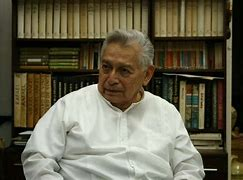
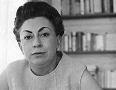
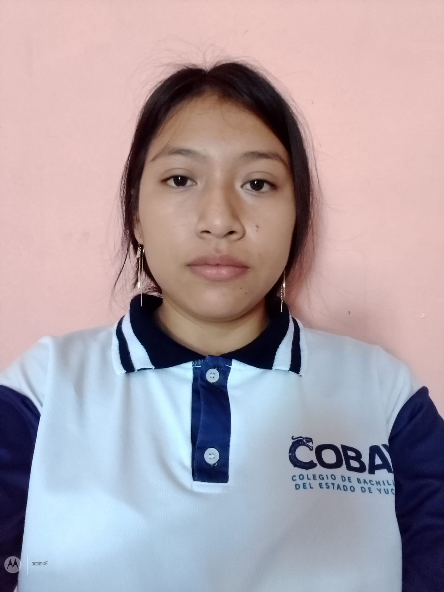

Fernando Castro Pacheco fue un
destacado pintor yucateco, nacido el 26 de mayo de 1918 en Merida,
Yucatan, y fallecido el 6 de agosto de 2013 en la misma ciudad. Es
considerado uno de los artistas mas importantes de la region y uno de
los maximos exponentes del arte contemporaneo en Yucatan.
Castro Pacheco se distinguio por su estilo unico, en el que combinaba
elementos del realismo con toques surrealistas y simbolistas. Sus obras
estan impregnadas de la cultura y la historia de Yucatan, retratando
paisajes, tradiciones, personajes y mitos de la region con gran
maestria y sensibilidad.
Ademas de su prolifica carrera como pintor, Castro Pacheco tambien
incursiono en otras disciplinas artisticas, como la escultura y la
ilustracion. Su legado artstico ha sido reconocido tanto a nivel
nacional como internacional, y su obra se encuentra en importantes
colecciones y museos de todo el mundo.
Fernando Castro Pacheco dejo un legado duradero en el mundo del arte, y
su contribucion al enriquecimiento de la cultura y la identidad de
Yucatan es incuestionable.

Rosario castellanos
Rosario Castellanos fue una
reconocida escritora y poeta mexicana nacida el 25 de mayo de 1925 en
Ciudad de M�xico y fallecida el 7 de agosto de 1974 en Tel Aviv,
Israel. Aunque nacio en la Ciudad de Mexico, tenia raices yucatecas por
parte de su familia materna.
Castellanos es una de las figuras mas importantes de la literatura
mexicana del siglo XX y una de las principales representantes de la
literatura feminista en America Latina. Su obra aborda temas como la
identidad, la discriminacion, el genero y la desigualdad social, entre
otros.
Algunas de sus obras mas destacadas incluyen la novela "Balon Canon",
que retrata la vida en el sureste de Mexico y las tensiones sociales
entre indigenas y mestizos, y el ensayo feminista "Mujer que sabe
latin...". Ademas, escribia poesia, cuentos y obras de teatro que
exploran las complejidades de la condicion humana y la sociedad
mexicana.
Rosario Castellanos fue una voz valiente y comprometida con la justicia
social y los derechos de las mujeres. Su legado literario y su
influencia en la literatura y el feminismo latinoamericanos perduran
hasta el dia de hoy.

CREADORES
IRVIN EDGARDO SANTOS CANO
LUCIANA ALEJANDRA KOYOC COHUO

KEVIN RAFAEL VELAZQUEZ PI�A